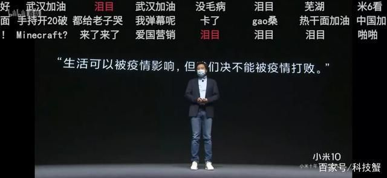

叶青疫区日记：陈一新副组长来了
原文链接 备份链接 非常时期，武汉成了全国人民挂念、祈福的城市。封城后，武汉人民的真实生活是什么样？ 正和岛自1月26日起特别推出《叶青：我在武汉疫区的第N天》专栏。叶青是一位定居武汉40年的市民，也是一名学者和官员。接下来的一段时间， …
岛语

非常时期，武汉成了全国人民挂念、祈福的城市。封城后，武汉人民的真实生活是什么样？
正和岛自1月26日起特别推出《叶青：我在武汉疫区的第N天》专栏。叶青是一位定居武汉40年的市民，也是一名学者和官员。接下来的一段时间，他会用笔记录下亲身经历的、观察到的武汉，为此他还专门外出到大街上、到超市里，获得一手真实的信息。
这将是一份宝贵的史料。感谢他，我们得以更真切地感知到武汉疫情。让我们一起为武汉加油！
*作者 | 叶青 正和岛蓝色岛邻*
排版 | 张珍珍 正和岛湖北岛丁
来源 | 正和岛APP
01
除湖北以外新增确诊病例11连降
14日，正月二十一。这是很古怪的一天，早上打雷，上午晴天加小雨，中午温度近19度。晚上又狂风大作。好像是一群人在哭喊。一些车辆的报警器响个不停。让人睡得很不安稳。14日，注定是一个没有鲜花的情人节。2020年的情人节，不必说浪漫礼物、甜蜜鲜花了，连出去吃顿火锅都成了奢望。据美团外卖的订单统计显示，带“花”字的蔬菜，例如西兰花、花菜成为情人节的抢手货。中铁快运昆明分公司介绍，今年的情人节鲜花运输需求较去年大幅下降，运输总重量仅占去年的13%左右。我们还是来看看新冠肺炎的数字。14日，全国新增确诊病例2641例，新增重症病例849例，新增死亡病例143例（湖北139例，河南2例，北京、重庆各1例），新增疑似病例2277例。截至14日，全国确诊病例56873例（其中重症病例11053例），累计治愈出院病例8096例，累计死亡病例1523例，累计报告确诊病例66492例，现有疑似病例8969例。全国除湖北以外地区新增确诊病例221例，连续第11日呈下降态势。过去这一数据分别为：890例(3日)、731例(4日)、707例(5日)、696例(6日)、558例(7日)、509例(8日)、444例(9日)、381例(10日)、377例(11日)、312例（12日）、267例（13日）。

14日，湖北新增确诊病例2420例（武汉1923例），新增治愈出院病例912例（武汉486例），新增死亡病例139例（武汉107例），现有确诊病例48175例（武汉34289例），其中重症病例10152例（武汉8335例）。
死亡病例在增加，但是防控措施已经越来越严密。
02
公共卫生应急管理体系
14日，中央深改委会议提出：确保人民群众生命安全和身体健康，是我们党治国理政的一项重大任务。既要立足当前，科学精准打赢疫情防控阻击战，更要放眼长远，总结经验、吸取教训，针对这次疫情暴露出来的短板和不足，抓紧补短板、堵漏洞、强弱项，该坚持的坚持，该完善的完善，该建立的建立，该落实的落实，完善重大疫情防控体制机制，健全国家公共卫生应急管理体系。2003年“非典”以前，中国追求“经济增长”；2003年以后，强调科学发展观，追求“经济发展”，人与自然的和谐。2012年以来，中国强调环境保护，蓝天白云增加了。通过此次“新冠肺炎”，建议把国民健康保障作为工作重点。这是治国理政合乎理性的延伸，即“是我们党治国理政的一项重大任务”。因此，健全国家公共卫生应急管理体系就是顺理成章的事情了。“学者+官员”做的很成功就是黄奇帆。我一直在学习他的观点。最近，黄奇帆公共卫生安全方面提出了很有价值的三个建议。希望有关部门予以采纳。第一个建议，就是教育部要鼓励双一流大学（原来的985、211大学）设立高质量的公共卫生学院，而不是只有医学院校来设置这一专业。第二个建议是应该建设一所国家重点的单体公共卫生与防疫大学，比如叫做“中国公共卫生大学”，类似于美国的“卫生与公众服务大学”和“国立卫生研究院NIH”。第三个建议，在各级政府制定“十四五”规划时，建议加大公共卫生与防疫的比重。从中央到地方花上2000亿~3000亿元把整个中国的公共卫生系统的短板给补上。经过这场疫情，我们确实要经济发展、环境保护和健康保障一起抓。否则，经济发展的成果都会被公共卫生危机蚕食掉。经济社会发展会倒退。由于缺乏有效的公共卫生应急管理体系，我们的医护人员损失惨重。14日，国务院应对新型冠状病毒感染肺炎疫情联防联控机制新闻发布会披露，截至2月11日24时，全国医务人员确诊新冠肺炎1716例，占全国确诊病例3.8%，其中6人不幸死亡，占全国死亡病例0.4%。湖北医务人员确诊新冠肺炎1502例，武汉1102例。武汉、湖北为什么占这么大的比重，原因在于初期不确定的情况下，很多医护人员处于“裸奔”的状态，极易受到感染。1月20日，钟南山院士就说，武汉有14位医护人员被感染，全部来自协和医院。除了李文亮医生，此次武汉还损失了几位医疗专家。在2月7日23点左右，华中科技大学三级教授，生命科学院楚天学者红凌教授刚因新冠肺炎去世。在2月10日，华中科技大学同济医学院附属同济医院器官移植科的林正斌教授同样因新冠肺炎救治无效而死亡。三天时间内2名教授同样因新冠肺炎去世，让华中科技大学的高端人才队伍损失惨重。当然艺术家也有遇难的。13日凌晨5点，湖北美术学院教授、湖北水彩领军人物刘寿祥因新冠肺炎在武汉金银潭医院逝世，享年62岁。

据刘寿祥的同事透露，刘寿祥的女儿女婿也被病毒感染正在住院，他的夫人现在单独隔离在家。这就是此次“新冠肺炎”的典型模式——“株连模式”：一位老人得病，晚辈送医感染。有事的一家都有事，没事的一家都平安。
钟南山院士说的“早发现，早隔离”是可以救命的金玉良言。因此，封闭小区，越严越好。虽然会有些不方便，但是，比起躺在病床上的人，你是非常幸运的。
03
中央指导组发起全面总攻
14日，孙春兰副总理率中央赴湖北指导组来到湖北省疫情防控指挥部，落实中央应对疫情工作领导小组各项决策，进一步部署打好武汉保卫战、湖北保卫战。孙春兰指出，湖北省疫情防控发生了一些积极变化。但是，疫情形势仍然严峻。要以更坚定的信心、更顽强的意志、更果断的措施，发起全面总攻。武汉市疫情防控指挥部表示，围绕“救患者、防扩散”的目标，力争做到确诊患者百分之百应收尽收、疑似患者百分之百核酸检测、发热病人百分之百进行检测、密切接触者百分之百隔离、小区村庄百分之百实行24小时封闭管理的具体举措。14日，武汉市新冠肺炎疫情防控指挥部发布通知，明确了住宅小区封闭管理的主要措施。这也是防控指挥部对2月10日发布的12号通告，以正式通知的形式，做出了细化和明确的规定。过去还可以“一户三天一人”外出购物，现在完全不行。实际上就是始于十堰市张湾区的“战时管理”，以及之后的孝感黄冈模式。现在在武汉实施。通知中要求，对住宅小区实行封闭管理时，一个小区一律只保留一个出入口。老旧小区、开放式居住区通过打围方式实现硬隔离。出入口安排人员24小时值班值守，测温登记，审核放行。除就医以及防疫情、保运行等岗位人员外，其他居民一律不得外出。小区人员出入一律测温、登记。无特殊理由，外来人员一律不得进入小区。从“封城”到“封小区”，整整花了22天。在完全封闭小区的同时，各区还在千方百计地在外面“捞人”。14日，江汉、硚口、汉阳三个区也发出公告，公布邮箱及电话向社会征集未收治、未隔离的“四类人员”。三区的征集目标均为辖区的未收治和未隔离的新冠肺炎确诊患者、疑似患者、发热患者和密切接触者等四类人员。
中午有一位网友对我说，有一对老夫妻发热还没有住院。我建议他赶快通过微信小程序的《国务院客户端》报告。到了晚上就住院了。
04
处分了一批干部
9日下午，武汉市疫情防控指挥部要求武昌区于当晚12时前向定点医院转运494名患者。当晚在患者转运过程中，武昌区水果湖街、黄鹤楼街、珞珈山街等工作滞后、衔接无序、组织混乱，跟车服务不到位，导致重症病人长时间等待继而情绪失控，造成恶劣影响。14日，武汉市纪委通报了对有关责任人严肃问责的情况。比如，水果湖街分指挥部负责45名重症患者的转运，但对转运工作重视不够，指挥不当，对重症患者考虑不周，仅安排两名工作人员和一辆引导车、一辆转运公交车进行转运，且对转运路况、患者情况、具体衔接等准备不充分、应对不及时，导致转运过程衔接无序、组织混乱、跟车服务不到位以及转运患者长时间等待等问题，造成不良社会影响。在中央指导组的约谈后，不仅对或者赔礼道歉，还要背上处分。11日，水果湖街分指挥部指挥长、街党工委副书记、办事处主任安继尧被给予党内警告处分，并免去其水果湖街办事处主任职务；街分指挥部指挥长、街党工委书记金建涛被给予诫勉谈话处理。1月20日，来自武汉江夏区中医院、江夏区第一人民医院的20多名新冠肺炎感染的医务人员在康复后10天，献出了自己的血液，这些血液被立即送往中国生物武汉生物制品研究所和中科院武汉病毒所进行相关处理，将滴度符合要求的血浆进行灭活等处理，制备出用于临床治疗的新冠病毒特免血浆制品。2月8日，新冠肺炎康复者血浆抗体治疗在武汉市江夏区第一人民医院和协和江南医院进行，首批共有9例重症患者患者接受这项治疗。病情明显好转。13日，金银潭医院院长张定宇恳请新冠肺炎康复者捐献血浆。14日，因为市民踊跃响应，武汉三个康复者血浆捐献点均已成功采集到数位康复者的血浆。这是怎么一回事？14日，一项评价新冠病毒康复者病毒灭活血浆用于治疗重症新冠肺炎患者的临床有效性和安全性的研究，在金银潭医院通过伦理审查。参加此次伦理会的华科大同济医学院临床药理学曾繁典教授介绍了新冠肺炎康复者献血浆的过程——先把全血抽出来，把血浆分离出来，再把剩下的白细胞、红细胞、血小板等物质再回输给捐献者。这个过程，相当于成份献血。不需要的再还给你。原来如此。这些好消息传递到股市，相当于给股市打了“鸡血”。14日，医药股强势开盘，血液制品类公司天坛生物、卫光生物、博晖创新悉数涨停。买不进的投资者垂头丧气，顺利加仓的踌躇满志：“十个板起步！”13日晚间，一条“新冠肺炎康复者血浆含抗体，能有效杀死新冠病毒”的消息不胫而走，刷爆朋友圈。中国生物通过其官方公众号表示，在各方紧密合作下，已用康复者新冠特免血浆治疗10余例危重病人，临床反映，患者接受治疗12至24小时后，实验室检测主要炎症指标明显下降，淋巴细胞比例上升，血氧饱和度、病毒载量等重点指标全面向好，临床体征和症状明显好转。公司指出，“在目前缺乏疫苗和特效药的前提下，新冠肺炎康复者恢复期的血浆是临床特异性治疗最可及的资源。”
这让中国生物背后的唯一一家A股上市公司天坛生物（600161）备受关注。
05
武汉校友天下楚商
12日，陈一新副组长呼吁武汉校友天下楚商积极参与武汉保卫战。校友大家都很清楚。武汉40年来，有300万校友遍布世界各地。湖北商人原来简称“鄂商”，总觉得不好听。经过大量的调查与研究，也广泛征询了企业家、学术界专家、楚文化专家、行政领导的意见，由湖北省企业发展促进会会长陈旭东提出叫响“楚商”。并于2010年12月5日在武昌洪山礼堂举行首届楚商论坛。2011年7月22日至8月3日，湖北省工商联面向社会开展了湖北商人征名定名活动，共有11万人参与讨论和投票，共评选出了楚商、鄂商、汉商、荆商、九商、鹤商、湖商、衢商、洪商、郢商10大待定名。投票结果显示，赞成湖北商人简称“楚商”的票数最高。湖北省政府新闻办2011年10月8日在召开的新闻发布会上，湖北省工商联主席赵晓勇说，统一“楚商”称谓，有利于叫响湖北商人品牌，扩大湖北商人影响、推动湖北经济发展。从此湖北商人正式定名为“楚商”。此后，每两年召开一次世界楚商大会，招商引资的成果丰硕。楚商由三个部分造成：在湖北出生的在外省做生意的、在湖北出生的在湖北做生意的、在外省出生在湖北做生意的。后来实际上还增加了一个部分：在湖北读过书的，皆为楚商。这是很庞大的力量。13日上午11时，湖北省楚商联合会党委书记、会长陈东升对全球楚商发出防控新冠肺炎动员令。楚商防控新冠肺炎领导小组随即成立，陈东升任总指挥，刘宝林、阎志、雷军、吴少勋、毛振华任副总指挥，蹇宏任总秘书长（总协调）。截至14日晚上8时30分，平台共接收楚商和武大商帮2051笔捐款，善款总额69170.99万元。折价医疗物资价值74600.31万元，未折价医疗物资包括医用外科口罩6597032只，民用口罩53.3万只， N95口罩32840只，防护服20.1204万件，医用手套19.045万双，手套26万副，护目镜6.18万只，消毒物资303.3吨，制氧机40套，测温仪550套，电子体温计3000支等。美国密歇根州湖北商会成立了“密歇根后援团”，目前已收到善款1152笔，总额17.5234万美元，约合122万元人民币，累计采购医疗物资五批次，并紧急发回湖北。小米集团、西山居和云米公司捐赠的小米平板，用于支持雷神山和火神山医院的远程视频探视系统。13日，雷军开了个在线发布会，发布了小米10手机。

雷军，是湖北仙桃人，在武汉度过了四年大学时光，发布会上，雷军在为武汉加油喊话，几度哽咽，他说，等疫情结束了，想去武汉大学看樱花，吃热干面。小米公司是在1月23日启动对武汉的紧急援助的，包括捐款、N95口罩、隔离服、体温计、检测试纸等，后续又联合调动相关生态链公司一起持续捐款捐物援助，加上雷军本人1070万元捐款，累计总捐款捐物超过3000万元。
武汉也要感谢校友。
06
小结
新冠肺炎疫情，凸显了健全公共卫生应急管理体系的重要性。国人吃饱喝足，更要健健康康。武汉保卫战开始“全面总攻”。封闭小区，“战时管理”，终于出现在武汉。
武汉校友是武汉的宝贵财富。

活着，成为当下中国民营企业的最高纲领！
如何打赢2020“生死之战”？她亲历阿里抗击非典，并带领创业酵母团队用七天时间快速完成业务转型和架构调整。
CEO如何深度思考与认知迭代，听张丽俊老师倾囊相授（识别图中二维码，即可收听）
**报名咨询：正和岛张珍珍**
18511280817

原文链接 备份链接 非常时期，武汉成了全国人民挂念、祈福的城市。封城后，武汉人民的真实生活是什么样？ 正和岛自1月26日起特别推出《叶青：我在武汉疫区的第N天》专栏。叶青是一位定居武汉40年的市民，也是一名学者和官员。接下来的一段时间， …
原文链接 备份链接 【财新网】（记者 黄蕙昭 综合）武汉市中心医院门前放满花束。7日凌晨3点48分，武汉中心医院官微发布李文亮医生抢救无效过世的消息。当日，手持花束的市民自发前往武汉中心医院，悼念在工作岗位被感染的李文亮医生。他曾因“发 …
原文链接 备份链接 【财新网】（记者 丁捷 综合）新型冠状病毒肺炎感染人数快速上升。根据国家卫健委数据，截至1月29日24时，中国累计报告确诊病例7711例，过去一天新增1737例确诊病例，西藏已出现首例确诊病例。新增死亡38例，新增疑 …
原文链接 备份链接 非常时期，武汉成了全国人民挂念、祈福的城市。封城后，武汉人民的真实生活是什么样？ 武汉在发生哪些变化？ 正和岛自1月26日起特别推出“叶青专栏”。叶青是一位定居武汉40年的市民，也是一名学者和官员。在过往多期的专栏文章 …
原文链接 备份链接 凤凰新闻客户端 凤凰网在人间工作室出品 *15分钟的路程，我花了15天时间* @高风 坐标：武汉&武汉 肺炎与爱情有2个相似之处：一是身体会有征兆，让人呼吸紧张、情绪不稳；二是无可幸免，稍没注意便会染上，但也 …